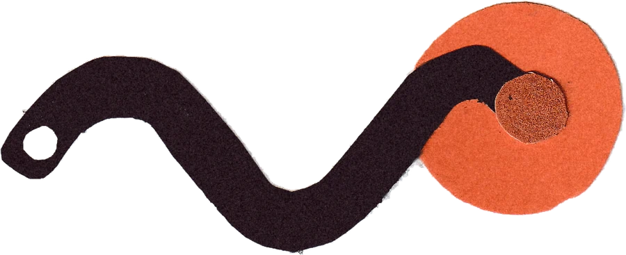

glowworm
a little light reading
An art and culture club. A handmade zine, four times a year, in the post.
join — $25 a seasonShipped free in the US.
Spring prints when we reach 100. If we don’t, you’re refunded.
What arrives
- Forty pages, four times a year
- A printed extra in every envelope
- Cut by hand, printed properly
The first hundred
Your name and handle in the back of the magazine. Every issue, forever — whether you stay or not.
Spring is the first one
issue no. 2 · spring 2027
Join now and Spring is the first envelope that arrives.
Issue no. 1 already exists
winter · roots · not for sale
- The cowboys Hollywood left out
- Do trees really talk?
- A lost apple, found on a walk
Forty pages, cut and printed. It’s where this started.
Who makes it
I’m Rudi, an artist and designer from Indiana. I made this.
Not ready yet? I’ll write when the next issue is close.